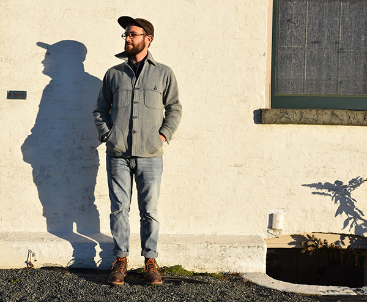

Aaron Simmons Resume
Education
- Earlham College, B.A. in Social Thought, 2011
- Rhode Island School of Design, Master of Industrial Design, expected graduation 2018
Experience
Greycork
Manufacturing and Design AssistantProvidence, Rhode Island, June 2016 - August 2016
- Identified new Green supply chain partnerships and material choices to meet and expand sustainability goals.
- Researched and and co-created sustainability and social responsibility strategy for current and new supply chains.
- Collaborated on redesign and concept design for new product lines.
- Participated in manufacturer visits and identifying new sourcing partnerships.
- Contributed to brand visibility strategy and website design.
Chicago Public Schools
Special Education Classroom AssistantChicago, Illinois, September 2015 - December 2015
- Acted as aid for three third grade students who were integrated in the gen-ed population.
- Coordinated with administration and social workers to administer Individual Education Plans (IEP) and behavioral management.
- Assisted with documentation and reporting for IEPs.
Youth Guidance
Supervisor and After-school InstructorChicago, Illinois, November 2013 – August 2015
- Assisted with the launch of the Lunch and Recess program at Skinner North.
- Taught Design Lab and Bookmaking enrichment classes for 2nd - 7th grade students.
- Supervised Youth Guidance staff, and acted as main coordinator in Coordinator’s absence.
Faith in Place
Congregational Outreach and SupportChicago Illinois, September 2012 – August 2013
- Co-managed Faith in Place’s Winter Farmer’s Markets in the Chicagoland Area.
- Organized Faith in Place’s partners to participate in Environmental Lobby Day 2013.
- Represented Faith in Place on the Clean Power Coalition that successfully passed a Municipal Aggregation program for the city of Chicago.
- Coordinated and provided support for the Year-Round Youth Eco-Ambassador Program that educates young people on energy conservation and other environmental practices.
The Earlham Word: The Newspaper of Earlham College
Editor of Layout and DesignRichmond, Indiana, September 2010 - May 2011
- Managed the graphic production of the weekly newspaper.
- Oversaw and contributed to a new design strategy for the newspaper.
- Trained and scheduled Design Department staff for production.
Achievements and Volunteer Involvement
- Avodah: Jewish Service Corps Member in Chicago IL, August 2012 - August 2013.
- The Rebuilding Exchange, Chicago, IL, September 2013 - February 2014.
- Earlham Student Government, Richmond, IN, January 2010 - December 2010.
Skills
Adobe: Photoshop, Illustrator, and InDesign, Rhino, Solidworks, and Keyshot.
Aaron at Beavertail Park, Oct 2016